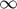
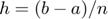
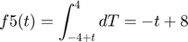

PRÁCTICA 4. Convolución y Correlacion de Señales en tiempo contínuo.
Autores:
- Acosta Villa Cristian Abraham
- Aguirre Solis Brenda Melissa
- Cordero Montes de Oca Luis Alberto
SEÑALES Y SISTEMAS, Grupo 2TV1
Contents
Objetivos de la práctica.
- Conocer métodos básicos de integración numérica.
- Manipulación de instrucciones en MATLAB
- Simular convoluciones y correlaciones de señales contínuas.
Introducción.
Convolución
Podemos mirar a la convolución de dos funciones f(x) y g(z) como la función resultante que aparece después de efectuar los siguientes pasos: Girar respecto del origen los valores de una de ellas, es decir g(z) = g(-z) para todo z desde -  a , Ir trasladando la función girada sobre la otra f(z) * g(x-z) En cada punto x calculamos el valor que resulta de sumar los productos obtenidos de multiplicar para todos los z los correspondientes valores de las funciones f(z) y g(x-z). De esta forma:
Correlación
Es básicamente lo mismo que la convolución a excepción de que no e toma desde el origen.
Teoría fundamental del cálculo
Sea f una función integrable en el intervalo [a,b]. * F debe ser continua [a,b] * En todo punto c de [a,b] en el que f sea continua se verifica que F es derivable en dicho punto, y F’(c)=f(c)

Newton-Cotes, regla del trapecio.
La regla del trapecio es uno de los métodos más utilizados para calcular aproximaciones numéricas de integrales definidas. Es la primera de las fórmulas cerradas de integración de Newton – Cotes, para el caso cuando el polinomio interpolante es de grado uno. Para el polinomio interpolante de primer grado se tiene:
, donde
Precisamente el área bajo la recta es una aproximación de la integral , es decir que .
Newton Cotes. Regla de Simpson, regla de 3/8 de Simpson
De manera similar a la derivación de la regla trapezoidal, se ajustan los polinomios de Lagrange de tercer orden a cuatro puntos e integrar:
Obienes:
En donde . A esta ecuación se le llama la regla de Simpson de 3/8 porque h es un múltiplo de 3/8.
Regla del trapecio compuesta. Regla de Simpson compuesta.
La regla del trapecio compuesta o regla de los trapecios es una forma de aproximar una integral definida utilizando n trapecios. En la formulación de este método se supone que f es continua y positiva en el intervalo [a,b]. De tal modo la integral definida

representa el área de la región delimitada por la gráfica de f y el eje x, desde x=a hasta x=b. Primero se divide el intervalo [a,b] en nsubintervalos, cada uno de ancho

Después de realizar todo el proceso matemático se llega a la siguiente fórmula:

Donde  y n es el número de divisiones.
La expresión anterior también se puede escribir como:

Cuadratura Gaussiana
El objetivo de la cuadratura de Gauss - Legendre es determinar las abscisas x1 y x2 y dos coeficientes w1 y w2 de manera que la fórmula:

sea exacta para polinomios cúbicos de la forma f(x) = a3x3 + a2x2 + a1x +a0. Como hay que determinar cuatro números w1, w2, x1 y x2 en la expresión anterior, se deben seleccionar cuatro condiciones que deben cumplirse. Usando el hecho de que la integración es aditiva, será suficiente con exigir que la integral anterior sea exacta para las cuatro funciones f(x) = 1, x, x2, x3. Por lo tanto, las cuatro condiciones de integración son:


La solución del sistema anterior está dada por:


Así, se ha encontrado los nodos y los coeficientes o pesos con los que se construye la cuadratura de Gauss - Legendre. En consecuencia, si f es continua en [-1;1], resulta:

La cuadratura de Gauss - Legendre con dos nodos G2(f) tiene grado de precisión n=3 y si f pertenece a C4[-1;1], entonces,

siendo

para algún punto epsilon que pertenece a [-1;1].
Desarrollo.
Ejercicio 1
Realizaremos la convolución de las siguientes señales:
En este caso, tomaremos h(t) como la señal fija h(T) y x(t) será nuestra x(t-T).
Entonces, nuestras integrales quedarían de la siguiente forma.
Al realizar la convolución, la señal resultante tendrá una longitud de 3.
Los intervalos son los siguientes:

Entonces, las gráficas son las siguientes:
Grafica de la convolución
h1 = @(t) 1*((-t+1).*(t>=0&t<1)+(t-1).*(t>=1&t<2)); x1 = @(t) 1*((t>=0&t<1)); convconm(x1,h1) h2 = @(t) 1*(t).*(t>=0&t<1)+1*((t>=1&t<2)); x2 = @(t) 1*((t>=1&t<3)); convconm2(x2,h2) h3 = @(t) 1*(t>=0&t<3)+(-1*((t>=3&t<4))); x3 = @(t) 1*(t>=0&t<3)+(-1*((t>=3&t<4))); convconm3(x3,h3) x_0 = @(t) 1*(t>=0&t<2)+(-1*((t>=2&t<4))); x_1 = @(t) 1*(t>=0&t<3)+(-1*((t>=3&t<4))); convconm4(x_0,x_1) function convconm(x1,h1) figure (1) % Se crea una figura para hacer las gráficas dtau = 0.005; % Base de los rectangulos para realizar la integral tau = -1:dtau:4; % Intervalo de visualización del resultado ti = 0; % Indice para el vector de resultados tvec = -.25:.1:3.75; % traslaciones de t, cuantas integrales se calulan y = NaN*zeros(1, length (tvec)); % Resultados de acuerdo a cuantos t for t = tvec, % Cantidad de traslaciones ti = ti+1; % Indice para guardar el resultado (indice del tiempo) xh = x1(t-tau).*h1(tau); % resultado de la multiplicación lxh = length(xh); % longitud del resultado y(ti) = sum(xh.*dtau); % Base por altura, aproximación de la integral subplot (2,1,1), % gráfica de 2 x 1 (primera) plot(tau, h1(tau), 'm-', tau, x1(t-tau), 'k--', t, 0, 'ob'); %graficas axis ([tau(1) tau(end) -2.0 2.5]); % límites de los ejes patch([tau(1:end-1); tau(1:end-1); tau(2:end); tau(2:end)],... [zeros(1,lxh-1);xh(1:end-1);xh(2:end);zeros(1,lxh-1)],... [.8 .8 .8], 'edgecolor', 'none'); xlabel('\tau'); % Texto del eje X legend('h(\tau)', 'x(t-\tau)','t','h(\tau)x(t-\tau)')% Caja de Texto subplot (2, 1, 2) % gráfica de 2 x 1 (segunda) plot (tvec, y, 'b', tvec (ti), y(ti), 'ok'); xlabel ('t'); ylabel ('y(t) = \int h(\tau)x(t-\tau) d\tau'); axis ([tau(1) tau(end) -1.0 2.0]); % límites del eje grid; % malla drawnow; % efecto de movimiento continuo end end
Ejercicio 2
Realizaremos la convolución de las siguientes señales:
En este caso, tomaremos h(t) como la señal fija h(T) y x(t) será nuestra x(t-T).
Las integrales quedarían de la siguiente manera:

Al realizar la convolución, la señal resultante tendrá una longitud de 3. Los intervalos son los siguientes:

Entonces, las gráficas son las siguientes:
Grafica de la convolución
function convconm2(x2,h2) figure (2) % Se crea una figura para hacer las gráficas dtau = 0.005; % Base de los rectangulos para realizar la integral tau = -1:dtau:7; % Intervalo de visualización del resultado ti = 0; % Indice para el vector de resultados tvec = 0.5:.1:6; % traslaciones de t, cuantas integrales se calulan y = NaN*zeros(1, length (tvec)); % Resultados de acuerdo a cuantos t for t = tvec, % Cantidad de traslaciones ti = ti+1; % Indice para guardar el resultado (indice del tiempo) xh = x2(t-tau).*h2(tau); % resultado de la multiplicación lxh = length(xh); % longitud del resultado y(ti) = sum(xh.*dtau); % Base por altura, aproximación de la integral subplot (2,1,1), % gráfica de 2 x 1 (primera) plot(tau, h2(tau), 'm-', tau, x2(t-tau), 'k--', t, 0, 'ob'); %graficas axis ([tau(1) tau(end) -2.0 2.5]); % límites de los ejes patch([tau(1:end-1); tau(1:end-1); tau(2:end); tau(2:end)],... [zeros(1,lxh-1);xh(1:end-1);xh(2:end);zeros(1,lxh-1)],... [.8 .8 .8], 'edgecolor', 'none'); xlabel('\tau'); % Texto del eje X legend('h(\tau)', 'x(t-\tau)','t','h(\tau)x(t-\tau)')% Caja de Texto subplot (2, 1, 2) % gráfica de 2 x 1 (segunda) plot (tvec, y, 'b', tvec (ti), y(ti), 'ok'); xlabel ('t'); ylabel ('y(t) = \int h(\tau)x(t-\tau) d\tau'); axis ([tau(1) tau(end) -1.0 2.0]); % límites del eje grid; % malla drawnow; % efecto de movimiento continuo end end
Ejercicio 3
Realizaremos la autocorrelación de la siguiente señal:
En este caso, invertiremos g_{2}(t) y quedaría como g_{2}(t-T)
Las integrales quedarían de la siguiente manera:

Al realizar la autocorrelación, la señal resultante tendrá una longitud de 3. Los intervalos son los siguientes:

Entonces, las gráficas son las siguientes:
Grafica de la convolución
function convconm3(x3,h3) figure (3) % Se crea una figura para hacer las gráficas dtau = 0.005; % Base de los rectangulos para realizar la integral tau = -6:dtau:9; % Intervalo de visualización del resultado ti = 0; % Indice para el vector de resultados tvec = -1:.1:8.5; % traslaciones de t, cuantas integrales se calulan y = NaN*zeros(1, length (tvec)); % Resultados de acuerdo a cuantos t for t = tvec, % Cantidad de traslaciones ti = ti+1; % Indice para guardar el resultado (indice del tiempo) xh = x3(t-tau).*h3(tau); % resultado de la multiplicación lxh = length(xh); % longitud del resultado y(ti) = sum(xh.*dtau); % Base por altura, aproximación de la integral subplot (2,1,1), % gráfica de 2 x 1 (primera) plot(tau, h3(tau), 'm-', tau, x3(t-tau), 'k--', t, 0, 'ob'); %graficas axis ([tau(1) tau(end) -2.0 2.5]); % límites de los ejes patch([tau(1:end-1); tau(1:end-1); tau(2:end); tau(2:end)],... [zeros(1,lxh-1);xh(1:end-1);xh(2:end);zeros(1,lxh-1)],... [.8 .8 .8], 'edgecolor', 'none'); xlabel('\tau'); % Texto del eje X legend('h(\tau)', 'x(t-\tau)','t','h(\tau)x(t-\tau)')% Caja de Texto subplot (2, 1, 2) % gráfica de 2 x 1 (segunda) plot (tvec, y, 'b', tvec (ti), y(ti), 'ok'); xlabel ('t'); ylabel ('y(t) = \int h(\tau)x(t-\tau) d\tau'); axis ([tau(1) tau(end) -3.0 4.0]); % límites del eje grid; % malla drawnow; % efecto de movimiento continuo end end
Ejercicio 4
Realizaremos la correlación de las siguientes señales:
En este caso, invertiremos x_{1}(t), entonces quedará como x_{1}(t-T)
Las integrales quedarían de la siguiente manera:
Al realizar la autocorrelación, la señal resultante tendrá una longitud de 3. Los intervalos son los siguientes:

Entonces, las gráficas son las siguientes:
Grafica de la convolución
function convconm4(x_0,x_1) figure (4) % Se crea una figura para hacer las gráficas dtau = 0.005; % Base de los rectangulos para realizar la integral tau = -6:dtau:9; % Intervalo de visualización del resultado ti = 0; % Indice para el vector de resultados tvec = -1:.1:8.5; % traslaciones de t, cuantas integrales se calulan y = NaN*zeros(1, length (tvec)); % Resultados de acuerdo a cuantos t for t = tvec, % Cantidad de traslaciones ti = ti+1; % Indice para guardar el resultado (indice del tiempo) xh = x_0(t-tau).*x_1(tau); % resultado de la multiplicación lxh = length(xh); % longitud del resultado y(ti) = sum(xh.*dtau); % Base por altura, aproximación de la integral subplot (2,1,1), % gráfica de 2 x 1 (primera) plot(tau, x_0(tau), 'm-', tau, x_1(t-tau), 'k--', t, 0, 'ob'); %graficas axis ([tau(1) tau(end) -2.0 2.5]); % límites de los ejes patch([tau(1:end-1); tau(1:end-1); tau(2:end); tau(2:end)],... [zeros(1,lxh-1);xh(1:end-1);xh(2:end);zeros(1,lxh-1)],... [.8 .8 .8], 'edgecolor', 'none'); xlabel('\tau'); % Texto del eje X legend('h(\tau)', 'x(t-\tau)','t','h(\tau)x(t-\tau)')% Caja de Texto subplot (2, 1, 2) % gráfica de 2 x 1 (segunda) plot (tvec, y, 'b', tvec (ti), y(ti), 'ok'); xlabel ('t'); ylabel ('y(t) = \int h(\tau)x(t-\tau) d\tau'); axis ([tau(1) tau(end) -3.0 4.0]); % límites del eje grid; % malla drawnow; % efecto de movimiento continuo end end